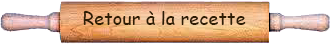

OrigineL'origine précise du gâteau basque est difficile à établir, car il existe plusieurs versions de son histoire. Cependant, on peut dire que la recette a évolué au fil du temps, enracinée dans la tradition gastronomique de la région. HistoireCertains suggèrent que le gâteau basque a des origines médiévales, remontant au moins au XVIIe siècle. À cette époque, il aurait été préparé pour des événements spéciaux, tels que les fêtes religieuses ou les mariages. La région du Pays basque a été influencée par les cultures basque, française et espagnole. Ces influences se reflètent dans la cuisine locale, et le gâteau basque est un exemple de cette fusion culturelle. Le gâteau basque traditionnel se compose généralement de deux couches de pâte sablée fourrées avec une garniture de crème pâtissière à la vanille ou de confiture de cerises noires. La pâte peut être parfumée au rhum ou à l'essence d'amande, ajoutant une saveur distinctive au gâteau. Le gâteau basque est souvent associé à des événements festifs et traditionnels au Pays basque. Il est considéré comme une spécialité locale et est apprécié tout au long de l'année, que ce soit lors de célébrations familiales, de fêtes religieuses ou d'autres occasions spéciales.
|
|  |